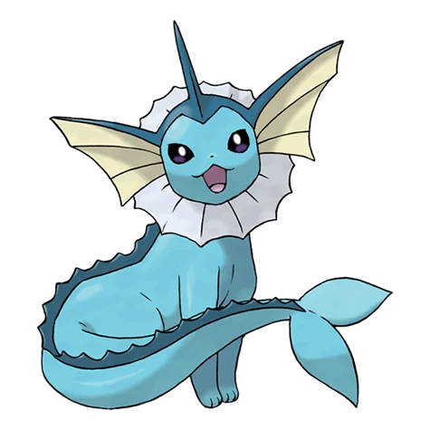
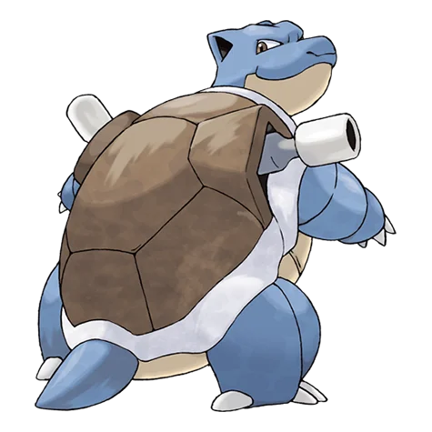
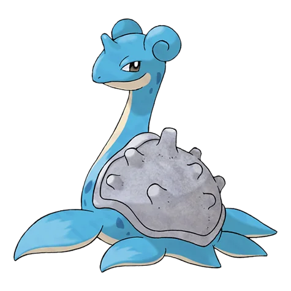
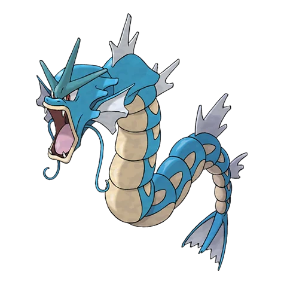

Pokémon Tipo Agua
Los Pokémon de Tipo Agua son famosos por su increíble versatilidad y adaptabilidad. Al igual que el elemento que representan, pueden ser tan calmados como un lago en reposo o tan devastadores como una tormenta en alta mar.
Es el tipo más común entre todas las especies descubiertas, habitando en ríos, lagos y los vastos océanos del mundo Pokémon. En combate, destacan por su gran resistencia y su ventaja estratégica sobre los tipos Fuego, Tierra y Roca.

Vaporeon
Su estructura celular es similar a las moléculas de agua, lo que le permite fundirse y volverse invisible en ella.
Agua
Blastoise
Lanza potentes chorros de agua por los cañones de su caparazón con una puntería y fuerza asombrosas.
Agua
Lapras
Un Pokémon de naturaleza amable. Le encanta surcar los mares llevando a gente y Pokémon sobre su lomo.
Agua Hielo
Gyarados
Extremadamente feroz y destructivo. Se dice que puede aparecer y arrasar ciudades enteras en momentos de ira.
Agua Volador